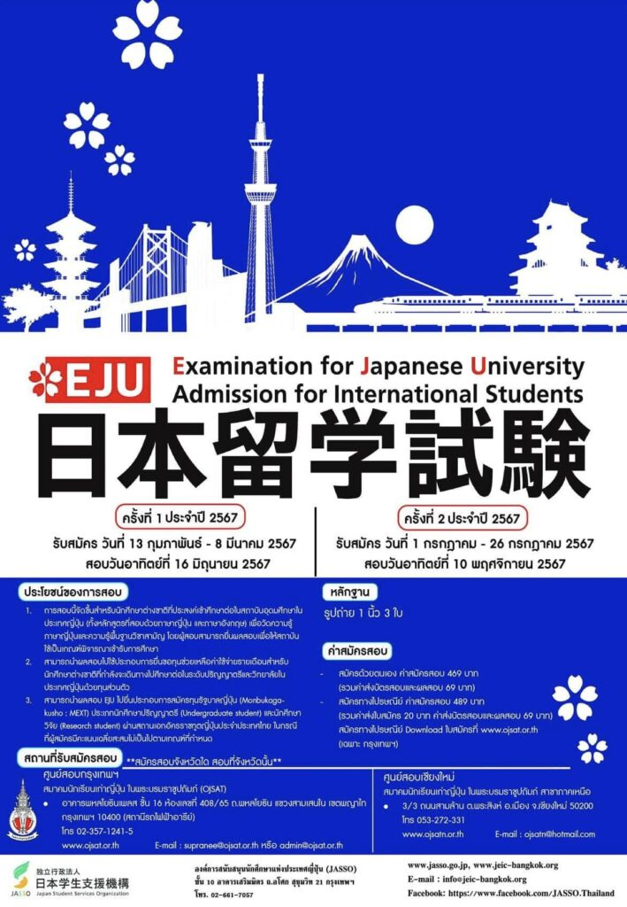

เปิดรับสมัครสอบ EJU ครั้งที่ 1 ประจำปี 2567
เนื้อหาตามประกาศ ณ วันที่เผยแพร่ โปรดตรวจสอบกำหนดการและเงื่อนไขก่อนดำเนินการ
[ประชาสัมพันธ์] เปิดรับสมัครการสอบเพื่อศึกษาต่อประเทศญี่ปุ่น (Examination for Japanese University Admission for International Students : EJU) ครั้งที่ 1 ประจำปี 2567
รับสมัคร : 13 กุมภาพันธ์ – 8 มีนาคม 2567
วันสอบ : วันอาทิตย์ที่ 16 มิถุนายน 2567
สนามสอบ : เชียงใหม่
ที่ทำการสมาคมนักเรียนเก่าญี่ปุ่นฯ สาขาภาคเหนือ (ตรงข้ามวัดพระสิงห์)
ค่าสมัคร
- กรณีสมัครด้วยตนเอง 469 บาท
- กรณีสมัครทางไปรษณีย์ 489 บาท
โอนเงิน : ธนาคารกรุงไทย สาขาประตูเชียงใหม่
เลขที่บัญชี : 540-0-11832-1
ชื่อบัญชี : สมาคมนักเรียนเก่าญี่ปุ่น ในพระบรมราชูปถัมภ์ สาขาภาคเหนือ
** เอกสารการสมัครต้องมาถึงสมาคมฯ สาขาภาคเหนือ ภายในวันที่ 8 มีนาคม 2567 ** - เอกสารที่ต้องใช้ในการสมัคร📄
รูปถ่ายผู้สมัคร ขนาด 1 นิ้วครึ่ง จำนวน 3 ใบ
ลิงค์สำหรับ Download - ใบสมัคร : https://ojsat.or.th/main/wp-content/uploads/EJU/EJUapply.PDF
- วิธีการกรอกใบสมัคร : https://ojsat.or.th/main/wp-content/uploads/EJU/EJUhowto.pdf
ติดต่อสอบถามรายละเอียดเพิ่มเติมที่
สมาคมนักเรียนเก่าญี่ปุ่นฯ ภาคเหนือ (ตรงข้ามวัดพระสิงห์)
โทร. 053-272-331
E-mail : ojsatn@gmail.com
📚Download คู่มือ Mini Student Guide📚
• การสอบ EJU คืออะไร
• ประโยชน์ของการสอบ EJU
• สถานที่รับสมัคร ข้อสอบเก่า ฯลฯ
https://goo.gl/Kybzqd

